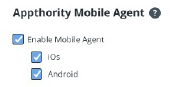

Mobile Agent provides you with the ability to send immediate notifications to users for action, with no need to wait for sync or to communicate with the EMM.
Use the Admin > Organization > Appthority Mobile Agent section use Mobile Agent and to select which platforms to support.
Note: You must select Enable Mobile Agent in Admin > Organization sub-tab to enable the Admin > Mobile Agent sub-tab.
To set options for Mobile Agent

Note: Only platform options selected under Organization > Enable Mobile Agent will appear in Deploy Mobile Agent.